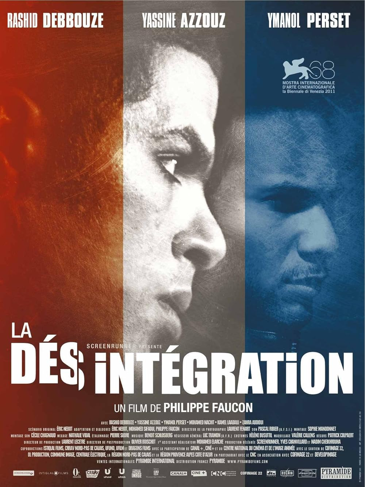
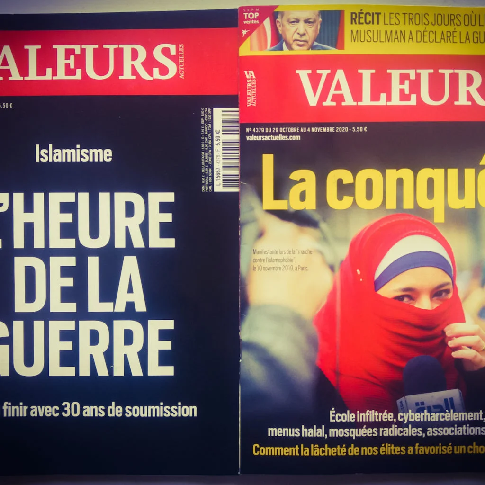

Section 04
Media, Film & Islamophobic Representation
Media plays a major role in shaping how Muslims are viewed in France. Films, news outlets, and online spaces often connect Muslim identity with danger, extremism, or failure to assimilate. This matters because these representations help normalize the idea that Muslims are outsiders in French society.
Films & Television

La Désintégration (2011)
This film focuses on the radicalization of young Muslim men in France. While it tries to show a complex issue, it can also reinforce the idea that Muslim youth from the banlieues are naturally connected to extremism. This connects to the course idea of “othering,” where Muslims are shown as separate from the rest of society.
Engrenages / Spiral (2005–2021)
This crime drama often places Arab and Muslim characters in stories about crime, policing, and suspicion. Even when the show is not openly Islamophobic, these repeated patterns can make Muslim communities seem dangerous or criminal. This shows how media can reinforce stereotypes without directly saying them.
Press, Print & Online

Le Figaro & Valeurs Actuelles
Studies have shown that these outlets often frame Islam as a threat to French identity. Valeurs Actuelles has also faced legal action for racist depictions of Muslim figures.
Online Islamophobic Ecosystems
Social media platforms allow Islamophobic content to spread quickly, but they also attempt to regulate it through content warnings and moderation tools. Posts related to Islam and politics are often flagged as sensitive, showing how these discussions are both widespread and controversial. This highlights how Islamophobia exists in everyday digital spaces, even when platforms try to limit its visibility.